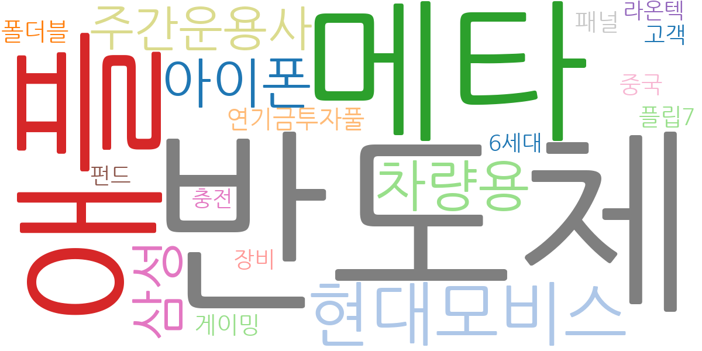
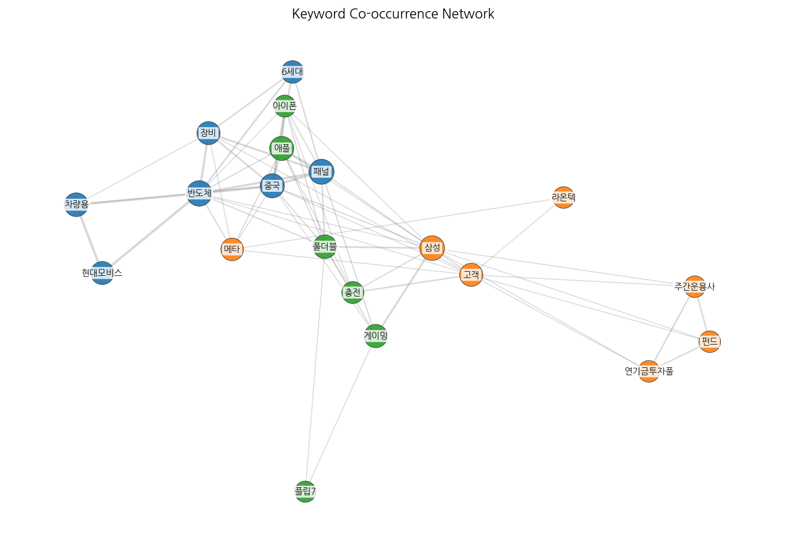
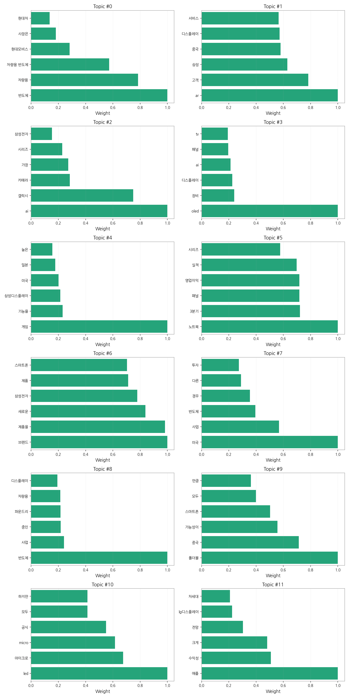

1. 핵심 맥락:
2. 최근 변화/스파이크:
3. 실무 인사이트:

| Rank | Keyword | Score |
|---|---|---|
| 1 | 반도체 | 0.664 |
| 2 | 애플 | 0.405 |
| 3 | 메타 | 0.391 |
| 4 | 현대모비스 | 0.379 |
| 5 | 차량용 | 0.378 |
| 6 | 삼성 | 0.370 |
| 7 | 아이폰 | 0.351 |
| 8 | 주간운용사 | 0.344 |
| 9 | 연기금투자풀 | 0.322 |
| 10 | 폴더블 | 0.310 |
| 11 | 패널 | 0.297 |
| 12 | 게이밍 | 0.296 |
| 13 | 중국 | 0.288 |
| 14 | 플립7 | 0.281 |
| 15 | 고객 | 0.273 |



1. 핵심 맥락:
2. 최근 변화/스파이크:
3. 실무 인사이트:
| Idea | Target | Value Prop | Score |
|---|---|---|---|
| 메타버스 협업용 초고해상도 마이크로 OLED XR 디스플레이 모듈 | 북미 빅테크 기업 (Meta, Apple 등) | 초고해상도, 고주사율, 넓은 색 영역을 지원하는 마이크로 OLED 디스플레이 모듈을 통해 몰입감 높은 XR 경험 제공. 경쟁사 대비 뛰어난 화질, 저전력, 소형화를 통해 XR 기기의 성능 및 휴대성 향상에 기여. | 4.50 |
| 차량용 AR HUD (Augmented Reality Head-Up Display) 솔루션 | 글로벌 완성차 OEM (특히 프리미엄 브랜드) | 운전자의 시선 이동을 최소화하고, 증강현실 기반의 직관적인 정보 제공으로 안전 운전 및 편의성 극대화. 경쟁사 대비 넓은 시야각, 고해상도, 실시간 정보 연동을 통한 차별화된 사용자 경험 제공. | 4.20 |
| QD-MicroLED 기반 초대형 프리미엄 TV | 프리미엄 TV 시장 소비자 | QD-MicroLED 기술을 통해 OLED 대비 뛰어난 밝기, 색 재현율, 명암비 및 내구성을 제공하는 초대형 프리미엄 TV. 기존 MicroLED TV 대비 생산 비용을 획기적으로 낮춰 가격 경쟁력 확보. | 4.00 |
| IT 기기용 초저전력 폴더블 OLED 패널 | 글로벌 IT 기기 제조사 (Samsung, Lenovo, Dell 등) | 기존 OLED 대비 30% 이상 전력 소비를 줄인 폴더블 OLED 패널을 통해 기기의 배터리 사용 시간 극대화. 얇고 가벼운 디자인, 뛰어난 내구성, 높은 화면 품질을 통해 사용자 만족도 향상. | 3.80 |
| AI 기반 디스플레이 공정 자동화 및 수율 개선 솔루션 | 디스플레이 제조 기업 (국내외) | AI 기반의 실시간 공정 데이터 분석 및 예측 모델을 통해 디스플레이 제조 공정의 자동화 수준을 높이고 수율을 획기적으로 개선. 불량 예측 및 원인 분석, 공정 최적화, 장비 유지보수 등을 통해 생산 비용 절감 및 품질 향상에 기여. | 3.50 |